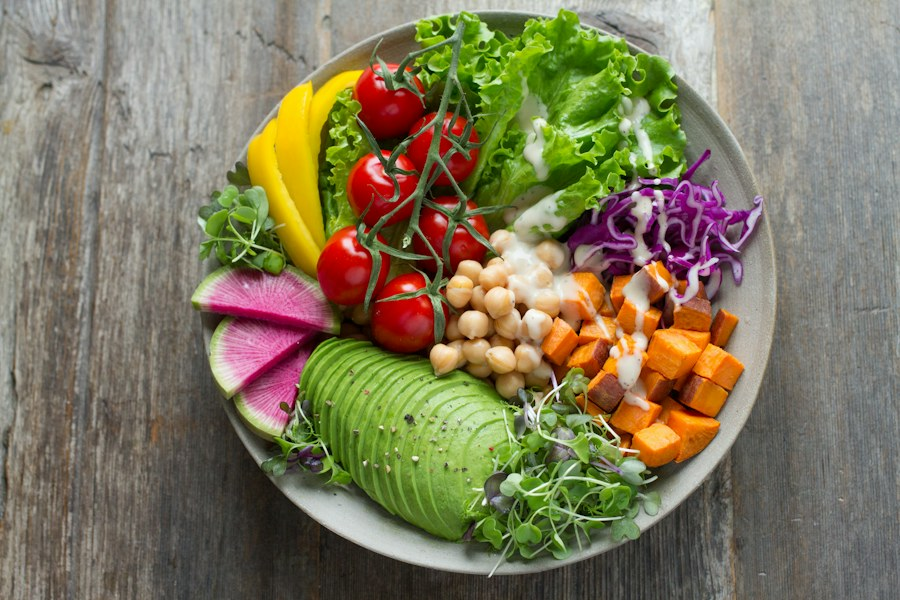

The good food club
GOOD FOOD.
GREAT ENERGY.
Fuel the things you love. Simple recipes, colorful ingredients and a little inspiration for your everyday plate.
A little more variety, one meal at a time.

✳ Simple ingredients
✳ Plenty of plants
✳ More variety
✳ All the flavor
A fresh start
Meet your next
favorite meal.
Easy to make. Easy to love.
Explore recipes and make them your own.
8 recipes to explore
Nutrition values are estimates per serving.Nothing on the menu just yet.
Try another ingredient or clear your filters.
A little planning goes a long way
Your day.
Your kind of fuel.
Add any recipe to a meal slot. Mix, match, and come back to your plan whenever you need a little inspiration.
These totals describe your selected meals; they are not a daily intake target. Your plan is saved in this browser.
Explore recipesA day, made delicious.
Keep it colorful
Variety looks good on your plate.
Mix vegetables, fruits, whole grains and different protein sources across your meals. Start with what you enjoy and what is available to you.
Read the WHO guide to a healthy diet ↗